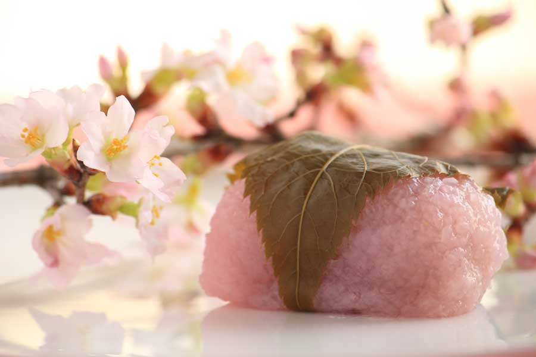

Sakura Mochi Recipe

Description
Sakura is the Japanese name for Japanese cherry blossoms and is the national flower of Japan. These beautiful flowers can range from pale pink to dark pink with some being white as well. These flowers are significant symbols and are seen in many aspects of Japanese culture including art, music and food. Many children are also named after them too!
The petals and leaves of these flowers are also edible. They’re usually pickled and then salted. Some foods use an extracted version of the aroma though. Sakura has a very mild floral flavour with a very subtle hint of bitterness which vanishes if you add sugar.
Of course, this sakura mochi recipe must include pickled sakura leaves. The recipe also gets its name for the pink colour of the mochi. They’re also the most popular treat to enjoy during Hanami, the cherry blossom festival. Mochi is a Japanese rice cake made from mochigome, sweet sticky short-grain rice. Some mochi is made by grinding the rice into a powder before adding water and cooking it.
It tastes quite plain on its own which is why most mochi recipes add in fillings or toppings. Some of the most popular filling choices include red bean, black sesame, matcha and strawberry.
Ingredients
- ¾ cup sweet rice (mochigome)
- ¾ cup water
- 1-2 drops red food colouring
- 1 tbsp sugar
- 5 tbsp red bean paste (homemade or store-bought)
- 6 pickled sakura leaves
- Rinse the sweet rice with running water twice before soaking it for at least 1 hour. There should be an inch of water above the rice level. You can also soak the rice overnight.
- Then soak your sakura leaves in water for 15 minutes to remove the salt. After, pat dry with some paper towel.
- Prep your red bean paste if you decide to make it yourself. Let it cool completely before beginning the next step./li>
- Wet your hands and roll out 6 small red bean balls for the filling.
- After the sweet rice has soaked long enough, drain the water and put it into a large, microwave-safe bowl.
- Add in the ¾ cup of water and food colouring. Start with one drop of food colouring and mix it in before adding a second drop. Try not to add too much colour. The end goal is a pale pink.
- After, cover the bowl with plastic wrap and microwave the rice for 6 minutes (1100W).
- Uncover the bowl and mix the rice. Then cover it with a kitchen towel and microwave for another 5 minutes.
- After cooking the rice, it should be slightly sticky. Add in the sugar and mix everything together. If you want sweeter mochi, add more sugar. Use less sugar for a less sweet mochi.
- In the same bowl, pound the sweet rice with a pestle or a similar utensil until the rice becomes very sticky but still resembles rice grains. Divide the sweet rice into 6 even portions.
- Prep your work surface by laying out a sheet of plastic wrap and spraying a bit of water over it.
- Spread one sweet rice portion into a rectangular shape. The edges should be slightly thicker than the center and there are no holes in the center area.
- Place one red bean ball you rolled earlier into the center of the rectangle and then roll the sweet rice over the red bean ball to cover it.
- Tighten the plastic wrap and twist the ends to shape the mochi into a nice oval shape. Repeat steps 12 to 14 for the remaining mochi balls.
- When all the mochi balls are rolled and shaped, wrap one sakura leaf around each one. Leave them at room temperature for about an hour or until the mochi absorbs the flavour of the leaf.
- Serve with some green tea and enjoy! To store them, keep them at room temperature in an airtight container. Make sure to enjoy them on the same day. Putting the sakura mochi in the fridge will harden the rice.